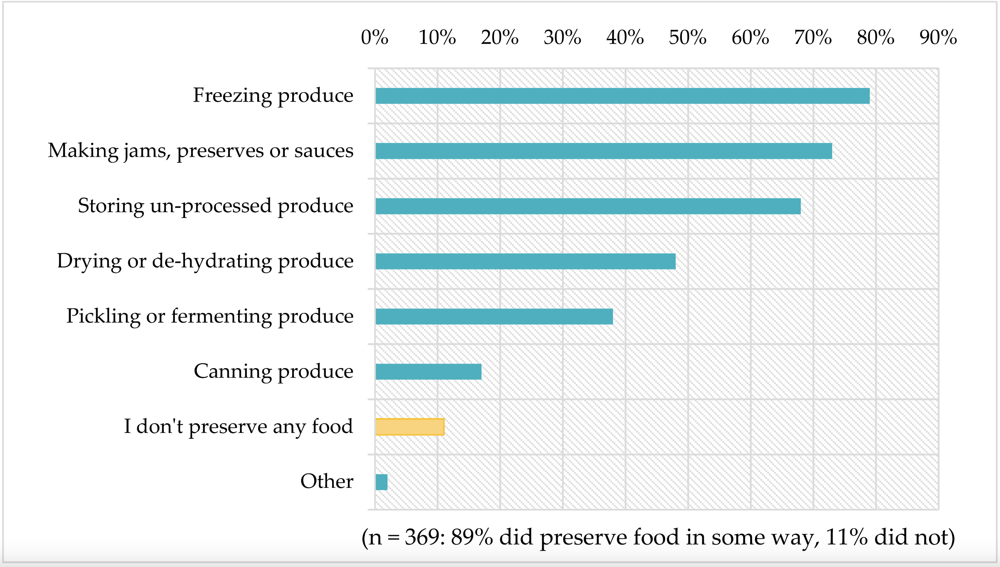

# general use
library(tidyverse)
library(readxl)
library(here)
library(janitor)
# visualizing pairs
library(GGally)
# model selection
library(MuMIn)
# model predictions
library(ggeffects)
# model tables
library(gtsummary)
library(flextable)
library(modelsummary)
drought_exp <- read_xlsx(path = here("data", #specifying path
"Valliere_etal_EcoApps_Data.xlsx"),
sheet = "First Harvest") ENVS193DS Homework 3
Link To Repository
Attaching Packages and Cleaning Data
# cleaning
drought_exp_clean <- drought_exp %>%
clean_names() %>% # nicer column names
mutate(species_name = case_when( # adding column with species scientific names
species == "ENCCAL" ~ "Encelia californica", # bush sunflower
species == "ESCCAL" ~ "Eschscholzia californica", # California poppy
species == "PENCEN" ~ "Penstemon centranthifolius", # Scarlet bugler
species == "GRICAM" ~ "Grindelia camporum", # great valley gumweed
species == "SALLEU" ~ "Salvia leucophylla", # Purple sage
species == "STIPUL" ~ "Nasella pulchra", # Purple needlegrass
species == "LOTSCO" ~ "Acmispon glaber" # deerweed
)) %>%
relocate(species_name, .after = species) %>% # moving species_name column after species
mutate(water_treatment = case_when( # adding column with full treatment names
water == "WW" ~ "Well watered",
water == "DS" ~ "Drought stressed"
)) %>%
relocate(water_treatment, .after = water) # moving water_treatment column after waterProblem 1. Multiple linear regression: model selection and construction
a. Table of Models
| Table 1: Comparison of Regression Models. This table shows the five regression models used to predict total biomass (g): “Null,” “Model 1,” “Model 2,” “Model 3,” and “Model 4.” Each column is a separate model. The header row indicates the predictor variable in question and check marks in the rows indicate that predictor variable was used in the model. |
| Predictors | Null | Model 1 | Model 2 | Model 3 | Model 4 |
|---|---|---|---|---|---|
| Specific Leaf Area (mm2/g) | ✓ | ✓ | ✓ | ||
| Watering Level (well watered vs drought conditions) | ✓ | ✓ | ✓ | ||
| Species Type | ✓ | ✓ | ✓ |
b. Statistical Methods
To examine the influence of specific leaf area (mm2/g), watering level (well watered vs drought stressed, and species type on total biomass, I compared the five models outlined in the table above in order to determine which predictor variables best influence total biomass. I used the model.sel function from the MuMIn package which uses corrected (for smaller sample size) Akaike Information Criterion (AICc) to rank the provided models according to their AICc values. Model 4, which looks at total biomass as a function of water treatment and species, has the lowest AICc value (-156.2) and highest weight (0.772), indicating it is the best model among those compared. To evaluate linear model assumptions, I used the plot for each model to evaluate the diagnostic plots for residuals vs fitted values, the Normal Q-Q plot, the Scale-Location plot, and the residuals vs. leverage plot. These visual checks confirmed the models were homoscedastic, normally distributed, and linear.
c. Visualization
#first read in model I am using
model4 <- lm(total_g ~ water_treatment + species_name, #formula
data = drought_exp_clean) #dataframe
#then need to get model prediction values
model_preds <- ggpredict(model4, #using model 4
terms = c("water_treatment", #predictor terms within model 4
"species_name"))#make new dataframe
model_preds_for_plotting <- model_preds %>% #make a new df from the model predictions df
rename(water_treatment = x, # renaming columns to make them match drought_exp_clean names
species_name = group)
ggplot() +
# underlying data
geom_point(data = drought_exp_clean, #using the clean data
aes(x = water_treatment, # x axis is water treatment
y = total_g, #y axis is total biomass
color = water_treatment), #color the points based on water treatment
alpha = 0.25)+ #make the underlying points more transparent
scale_color_manual(values = c("#C4A484", "#228B22"))+ # Specify colors for each group
#model data
geom_point(data = model_preds_for_plotting, #using dataframe I made above
aes(x = water_treatment, # x axis is water treatment
y = predicted, #y axis is predicted total biomass (g)
color = water_treatment), #color based on water treatment
size = 2.5, # Making model prediction points larger for visibility
shape = 17) + # Changing shape to triangle for better differentiation
# Cleaner theme
theme_classic() +
# Add labels
labs(x = "Water Treatment", y = "Total Biomass (mm2/g)", title = "Model Predictions vs. Data by Species and Watering Conditions") +
# Remove legend
theme(legend.position = "none") +
# Creating different panels for species
facet_wrap(~species_name)Figure 1: Well-watered plants tend to have higher total biomass than drought stressed plants. The above graph shows differences in total plant biomass between different water treatment types and species. The lighter circular points indicate underlying data while the triangular points indicate the model prediction values for each group. Among all species, well watered groups have higher predicted biomass than drought-stressed groups. Species type also influences predicted total biomass.
e. Results
Based on Akaike Information Criterion, water treatment and plant species are the predictors that best describe total mass (AICc = -156.2). These set of predictors were used in model 4, which was then used to perform a multiple linear regression. This regression indicated both species and water treatment type predict total biomass (g) (F (7,62) = 27.08, p <0.001, a = 0.05, adjusted R2 = 0.7257). Across species type, plants that were well-watered had a total mass that was 0.12 (+-0.017) grams higher than drought-stressed plants. Across water treatments, Grindelia camporum showed the largest positive difference (+0.31; +- 0.032 grams, p <0.001, a = 0.05) in total mass compared to the baseline species Acmispon glaber. Other species like Encelia californica, Eschscholzia californica, and Nasella pulchra also had significantly (p < 0.001) higher total mass, while Penstemon centranthifolius did not show a statistically significant difference (p = 0.13).
Problem 2. Affective visualization
a. Affective Visualization for My Data
My data is all about tracking how my new skincare routine is affecting the number of breakouts on my face. I think a really cool data visualization I could do would be a photo collage/slideshow showing the progression of my skin since I started the treatment the day I started collecting data. I, however, did not take photos of my face every day, so instead I think I could pair some photos that I do have with the data that I collected on a graph for a blended visualization.
b. Visualization Sketch
c. Visualization Draft
#first need to read in my CSV
Breakouts <- read_csv ("../data/BreakoutsMay30.csv")
base_plot <- ggplot()+ #create figure
geom_col(data = Breakouts, #ata is from breakout file, figure type is a bar chart
aes(x = treatment_day, # x axis is treatment day
y = pimples, # y axis is number of breakouts
fill = followed_plan))+
scale_fill_manual(values = c("Yes" = "pink", "No" = "skyblue"))+ # Specify colors
# Cleaner theme
theme_classic() +
# Add labels
labs(x = "Treatment Day", y = "Number of Breakouts", title = "Breakouts Throughout my Treatment", fill = "Followed Treatment Plan") +
# Remove legend
theme(legend.position = "top") +
# Remove space between x-axis and bars
scale_y_continuous(expand = c(0, 0))+
scale_x_continuous(expand = c(0,0)) 
d. Artistic Statement
My piece is showing the number of breakouts on my face as I process in my acne treatment. I am combining collected data with visual photos to tell a richer story than what I would otherwise be able to do with just my data. I used r to create the base of the figure and graph the data. I decided to color in the bars based on if I followed all of the steps of my treatment plan that day. That included using both acne medications I was prescribed and washing my face twice a day. I then imported that figure into Canva where I added photos throughout to the corresponding date on the graph. I took inspiration from the Dear Data project, which often combined different forms of data in interesting and creative ways.
Problem 3. Statistical critique
a. Revisit and Summarize
The authors used pearson correlation tests to find correlations between number of social learning sources and other variables such as gardening consistency and irrigation methods.They also used Man-Whitney U tests for comparing social capital scores of community gardeners to home gardeners. The figure I described in Homework two is below:

b. Visual Clarity
The authors’ figures showed percentages and frequencies of various variables they collected data on, but they did not, for example, show differences in means between populations (community gardeners vs home gardeners) or show the underlying data. Within the figures that they did present however, the data is easy to interpret. Categories are clearly labeled and their values are easy to understand, however, it would make more sense for frequency to be on the y-axis instead of along the x-axis, as it is the dependent variable.
c. Aesthetic Assessment
The authors did a relatively good job maintaining aesthetic clarity. Color palettes across figures and tables are consistent, and data never looks cluttered. Backgrounds on figures are slightly distracting with all of the lines, and there are no titles.
d. Recommendations
I would recommend switching the x and y axes so that the categories go along the x-axis (tilted at 45-degree angles for readability) and the frequencies of responses go on the y-axis. I would also recommend taking away background lines altogether as the data is simple enough to read without the guides. Lastly, I would add a simple title such as “Ways Gardeners Preserve Produce.” Additionally, I would recommend adding figures that compare the different populations and show the underlying data. For example, a figure could be made showing the difference in median social capital score between home gardeners and community gardeners. A scatter plot could be made with each group on the x axis with the underlying data scattered vertically, showing the scores along the y axis. Each group could be a different color for added clarity, and summary statistics (median and standard deviation) as a dot and whisker on the graph. This would help visually tell the story about the differences that were described in the paper so the reader has a better idea of what the author is describing when they discuss what statistical tests they used.